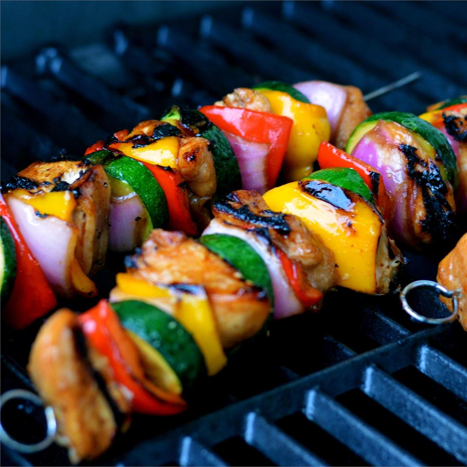

Honey Chicken Kabobs

Description
Chicken kabobs marinated in a sweet and sour sauce are a fun alternative
to usual barbecue fare. The honey-soy mixture does double duty as a
marinade and a basting sauce, adding delicious flavor to every bite of
juicy chicken. Use fresh mushrooms, cherry tomatoes, or other veggies and
marinate overnight if desired. Don't have a grill? These can be cooked
under your broiler.
Ingredients
Marinade:
- 1/3 cup honey
- 1/3 cup soy sauce
- 1/4 cup vegetable oil
- 1/4 teaspoon ground black pepper
Kabobs:
-
8 skinless, boneless chicken breast halves - cut into 1 inch cubes
- 5 small onion, cut into 2-inch pieces
- 2 medium red bell peppers, cut into 2-inch pieces
- 2 cloves garlic
- 12 bamboo skewers, or as needed, soaked in water for 30 minutes
Steps
-
Whisk together honey, soy sauce, oil, and black pepper for marinade in a
large glass bowl. Remove 1/4 cup of the marinade to a small jar; seal
and set aside to use while cooking.
-
Add chicken, onions, bell peppers, and garlic to the marinade in the
large bowl. Cover and marinate in the refrigerator for 2 hours or
overnight.
-
When ready to cook, preheat an outdoor grill for high heat and lightly
oil the grate.
-
Drain marinade from the chicken and vegetables, and discard marinade.
Thread chicken and vegetables alternately onto skewers.
-
Place kabobs on the preheated grill. Cook, turning frequently and
brushing with the reserved marinade, until the chicken is no longer pink
in the middle and the juices run clear, 12 to 15 minutes total.